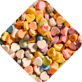
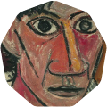
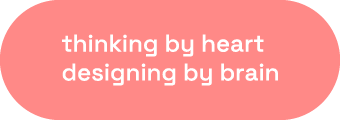
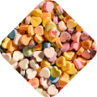
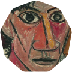
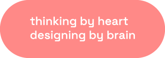

CASA HERRERA SEMINAR
A sophisticated website for a Carolina Herrera corporate event
Overview
Imagine the Casa Herrera Seminar website as a digital experience where elegance meets functionality. This website offers a seamless journey for 150 corporate attendees, providing intuitive access to the event agenda, registration process, and other essential information for event participants.
My Role
As a UX/UI Designer at UAY Events (a corporate events agency), I led the design of the Casa Herrera Seminar websit, ensuring it reflects the brand requirements and user experience standards. Also, I worked closely with the project manage to make key decisions, and review each step to align with the client's vision.
Applications
Software
Figma, Zeplin, Adobe Illustator
Year
2024

THE CHALLENGE
The client, Puig (owner of Carolina Herrera), requested the design of a website for the Casa Herrera Seminar, aiming to serve as a comprehensive information hub for attendees. The page needed to include essential details such as the event date, location, agenda, dress code, and a registration form for confirming attendance.
In addition, the client asked us to review feedback from previous event websites to improve the design and user experience, especially focusing on streamlining registration and providing better local information for international attendees.
Objectives
Design a website that allows guests to register and confirm their attendance, aligned with the brand guidelines.
Ensure the website is user-friendly and mobile-responsive, offering a seamless experience across devices.
Prepare a Design Hand-Off to support the development of the website.
UNDERSTAND
User feedback from previous event websites
To inform the design of the Casa Herrera Seminar website, we began by analysing user feedback from a previous event with the same attendees. The insights provided were instrumental in identifying key areas for improvement:
Registration difficulties
Users found the previous website’s registration process frustrating, particularly due to its lack of mobile responsiveness.
Communication gaps
The previous site lacked an easy way for attendees to contact event organizers, causing a sense of disconnection.
Need for local information about
International attendees requested more details about Barcelona, such as attractions, dining, and transportation.
These insights guided our design direction, emphasizing mobile responsiveness, the inclusion of local information, and improved communication channels with the organization team.
Carolina Herrera’s brand guidelines
To ensure brand consistency, I conducted an in-depth review of Carolina Herrera’s brand guidelines. The brand is globally renowned for its attention to detail, craftsmanship, and commitment to quality. Carolina Herrera’s identity is built on elegance, sophistication, and exclusivity, all of which are reflected in its designs and messaging.
Additionally, the brand emphasizes sustainability and environmental responsibility, adding further value and distinction to its offerings. For this project, it was crucial to adhere strictly to the visual and aesthetic standards outlined in the brand guidelines while incorporating elements that aligned with the Casa Herrera Seminar’s luxurious yet modern tone.
Event venue: Espai Corberó
Espai Corberó, the venue for the seminar, is characterized by its modern and minimalist architecture, blending contemporary design with natural elements. The venue’s clean lines and open spaces present a perfect opportunity to integrate subtle architectural references into the website design.
The goal was to create a digital experience that mirrors the venue’s elegance, offering attendees a glimpse of the space before they arrive.
Attendees of the seminar
The target audience for the Casa Herrera Seminar consists of internal employees and stakeholders from Puig and Carolina Herrera, ranging in age from 25 to 55. This includes regional managers, marketing leads, and other professionals involved in high-responsibility roles. Most attendees are international, traveling from different parts of the world for this seminar.
These attendees are busy professionals who are required to register for the event to help manage attendance and accommodation logistics. Although attendance is mandatory, the registration process needs to be quick and efficient.
According to internal surveys, 74% of employees check their work email on their mobile devices, while 23% use desktop and the remaining 3% access it on other devices. Moreover, statistics from last year’s event showed that a significant 68% of attendees accessed the website via mobile, further reinforcing the need for a mobile-optimized design.
DEFINE
Target audience
The audience for the Casa Herrera Seminar (and for the web) consists of Carolina Herrera and Puig employees and internal stakeholders from international markets, including regional managers, marketing leads, and other high-responsibility roles.
These professionals are flying into Barcelona specifically to attend the seminar, and they typically work full-time, managing demanding schedules. Time is valuable for them, so the registration process and attendance confirmation must be quick, efficient, and accessible.
The company communicates regularly with its employees by digital means, as they all have a company telephone and a computer. Including all relevant information for the event on a single website is a priority, as these professionals receive a lot of emails every day and segmenting the information into different messages can cause them to miss out on relevant information.
Creative concept of the website
The creative concept defined for the Casa Herrera Seminar website centers on a balance between functionality and aesthetic appeal, aiming for a modern, elegant, and visually engaging design.
The website should be not only functional and user-friendly but also convey a sense of beauty, ensuring a seamless experience for the user while embodying the brand’s luxurious ethos.
The overall look and feel should be “cute,” with a refined color palette that integrates the iconic red of the Carolina Herrera brand, while incorporating soft pinks to add a fresh, modern touch. The design will aim to create an inviting yet professional atmosphere, aligning with the seminar’s purpose while maintaining the high-end image of the brand.
Brand guidelines: logo, colours and typography
The logo, color palette, and typography provided by the client are crucial for preserving the Carolina Herrera brand identity throughout the website. The client developed a visual identity for the Casa Herrera Seminar, which will be applied across all communication materials, both online and offline, to ensure consistency across the entire campaign.
The seminar’s logo is presented here:
The color palette combines soft pink tones with a slightly adjusted version of Carolina Herrera’s signature red, emphasizing the brand’s luxurious and sophisticated aesthetic. The original color palette, defined by the client, was in CMYK, so it will be converted to HEX to ensure an optimal online experience.
For the typography, the client selected Bigilia for large headings and Gotham Book for body text. On the website, Bigilia will be used for major titles (H1, H2) as it conveys the event’s elegance, but due to its complexity at smaller sizes, we’ll limit its usage to larger text to preserve readability. For smaller titles, I’ve chosen Gotham Bold, which maintains a strong presence without compromising legibility. Gotham Book will be used for the body text, offering clarity and complementing the other fonts.
Visual style and Tone of communication
In line with the Carolina Herrera brand’s values of elegance and sophistication, the Casa Herrera Seminar website will adopt a minimalist visual style, with clean lines and high-quality imagery.
Minimalist, sleek illustrations will complement the imagery, enhancing the user experience without overpowering it.
The tone of communication will mirror Carolina Herrera’s globally recognized voice—aspirational, exclusive, and polished. The website’s content will use sophisticated language, reflecting the prestige and exclusivity associated with the brand, ensuring a cohesive, refined user experience.
IDEATE
Adapting Carolina Herrera’s Brand guidelines to the website
I adapted the CMYK colour palette, delivered by the client, to RGB for the website. This adjustment ensures optimal legibility and visual impact on digital devices, crucial for a mobile-first design. The soft pink adds an elegant touch, enhancing the brand’s sophistication while maintaining its vibrant identity. I ADD MORE COLOURS
I also introduced event-specific graphics and animations to reflect the unique identity of Espai Corberó, the venue for the seminar. The animations are subtle yet impactful, inspired by the architectural lines and shapes of the venue, seamlessly blending with the Carolina Herrera style. These dynamic elements enrich the user experience while reinforcing the brand’s luxury image.
These visual elements were applied across various online brand assets for the event, including the online invitation, digital signage, and social media promotions, ensuring a consistent and cohesive digital presence.
User flow
The primary user flow for the Casa Herrera Seminar website is designed to guide users through their journey seamlessly, with each step focused on providing essential event information and a smooth registration process.
This user flow is visually presented with a clear, step-by-step structure, ensuring that users can easily navigate through the necessary event details and register efficiently. The flow emphasizes quick access to important information while creating a streamlined and pleasant experience.
Wireframing
To ensure an intuitive and seamless user experience, wireframes for the Casa Herrera Seminar website were developed. These wireframes outline the structural flow of the website, prioritizing easy navigation, quick access to event details, and an efficient registration process. >.
The design follows a Mobile Design First methodology, ensuring that all elements are optimized for mobile devices before adapting for larger screens.
Mobile Design First approach guarantees that users have a smooth experience across all devices, aligning with the primary access method for attendees: mobile devices. The wireframes incorporate this strategy by focusing on simplicity and clarity, allowing users to easily find the information they need and complete the registration process without obstacles.
TEST
To refine the Casa Herrera Seminar website, we conducted user testing with a group of 20 participants from the target audience to assess usability and design. Testing methods included one-on-one interviews to gain insights into their experience with the site.
Based on the feedback, we identified the following Strengths and Areas for Improvement:
Strengths
The visual identity successfully reflects Carolina Herrera’s luxury and sophistication, aligning well with the event’s high-profile nature.
Event-specific graphics and animations effectively represent Espai Corberó’s unique style, adding a refined dynamic element to the website.
The website’s design prioritizes usability, allowing attendees to navigate information easily and complete the registration process without hassle.
Areas of improvement
Additional information about the Espai Corberó venue could provide context, especially for international attendees unfamiliar with the location..
Mobile usability could be improved by optimizing elements for smaller screens, ensuring smooth navigation across devices.
The registration form could be simplified to reduce the number of steps, improving the overall efficiency of the sign-up process.
Testing the order of sections in the landing page
In the testing phase, we also compared two design options for the landing page layout:
Option 1: Registration Before Information
Design: Form or CTA button placed immediately after the banner, leading directly to the registration page.
Ideal for users who want to register quickly without needing to explore more information..
Reduces friction in the conversion process, particularly for mobile users with limited time.
Perfect for users already familiar with the event and ready to commit.
Option 2: Registration Before Information
Design: Key event information (agenda, dress code, hotel, etc.) displayed first, followed by a CTA to register.
Helps attendees make an informed decision by presenting the full scope of the event..
Reinforces trust by showcasing the event’s organization and comprehensive details.
Suitable for users who need more information before deciding to register, such as details on the agenda, dress code, and accommodation.
After evaluating the results, we concluded that a hybrid structure combining both options would be the most effective. This approach allows for quick registration for users ready to sign up, while still providing essential event information for those who need it before deciding. The hybrid structure ensures a seamless experience for both types of users, maintaining efficiency and clarity throughout the process.
Final Design
LEARNINGS
Designing and developing the Casa Herrera Seminar website has been an immensely enriching experience that has expanded my skills in both UX/UI design and adapting brand strategies to digital platforms. This project allowed me to apply my web design knowledge while also adapting to the specific guidelines of a prestigious brand like Carolina Herrera.
One key learning was the importance of balancing aesthetics with functionality. In creating a website that reflects the brand’s sophistication and luxury, I was challenged to maintain a visually appealing interface without compromising the user experience. The design had to be intuitive, allowing smooth navigation, especially on mobile devices, given the “mobile-first” design approach.
This experience reinforced my ability to create interfaces that are not only visually impactful but also meet the needs of the user.
Another fundamental aspect was the process of adapting the brand’s visual elements to the web. Using the colour palette, typography, and graphics provided by the client challenged me to preserve the integrity of the brand while designing a cohesive digital experience. I learned to work with colours and fonts in an online environment, adjusting brand guidelines to maximize readability and user experience. The decision to test different user flow options for the registration page was also crucial, as I understood the importance of iteration and usability testing to optimize conversion.
Working collaboratively with other professionals, such as project manager and developers, was another major learning opportunity. Through the handoff design process, I gained a better understanding of the importance of providing clear and detailed specifications to ensure the design is correctly implemented in code. This helped me improve my communication and coordination skills within multidisciplinary teams.
In summary, this project provided a valuable opportunity to further refine my user-centred design approach, adapting a strong brand identity into an intuitive digital experience, while understanding the significance of collaboration and testing in the design process.
More Work
 




